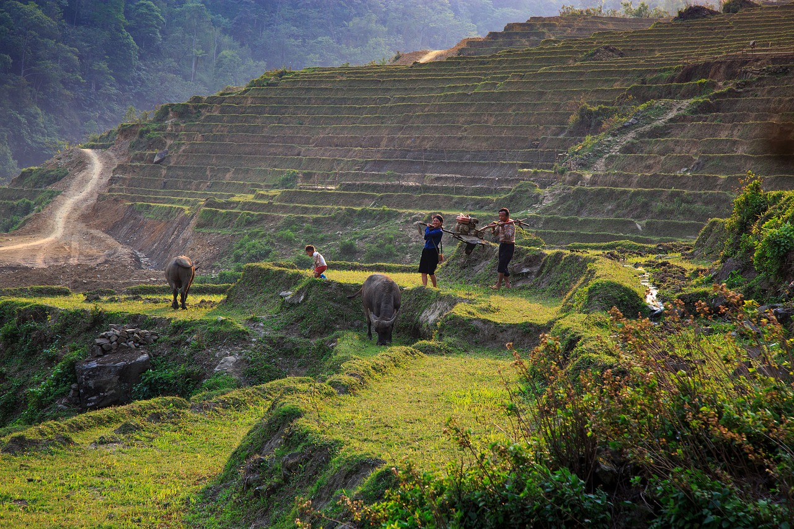
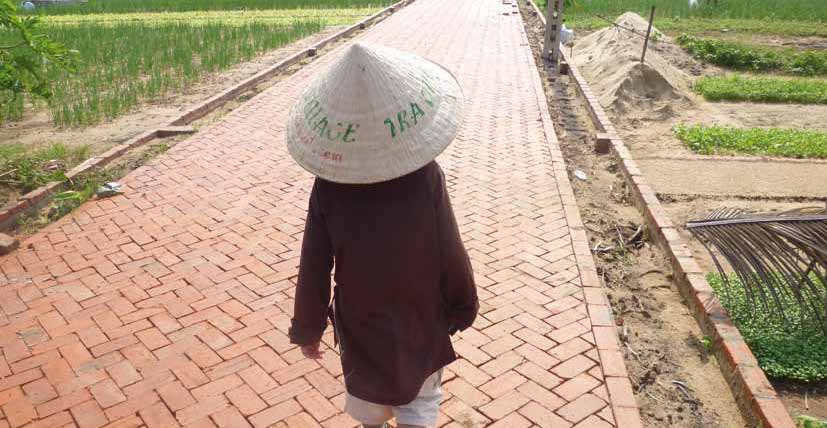
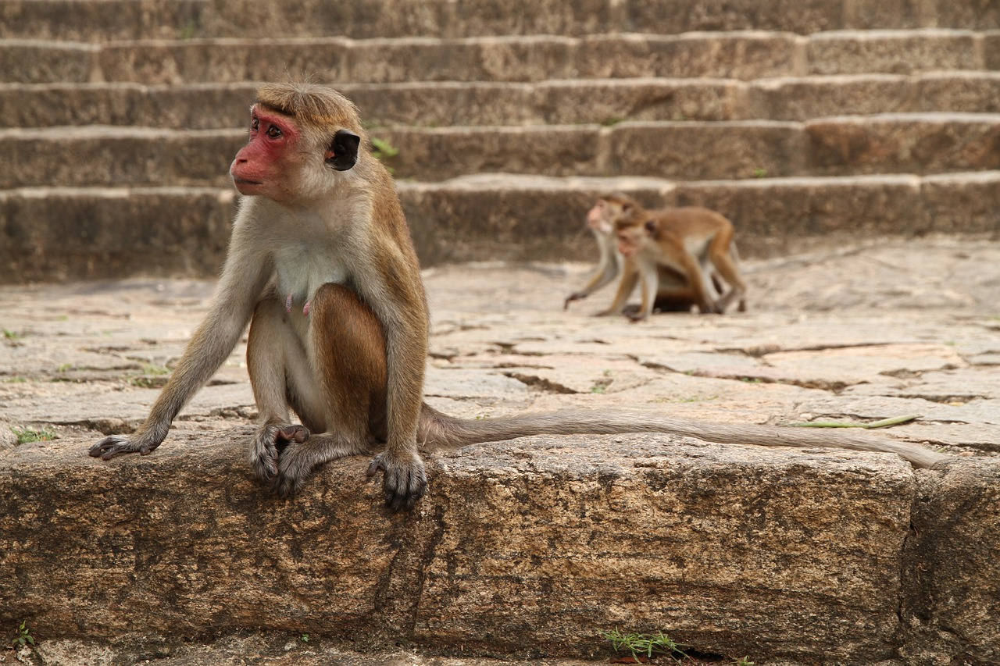
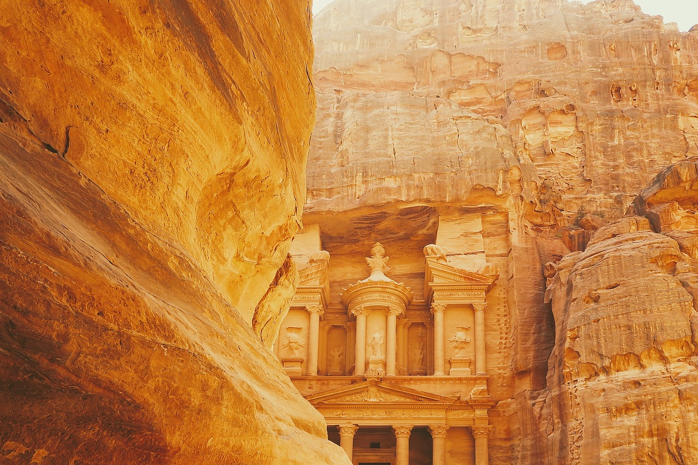
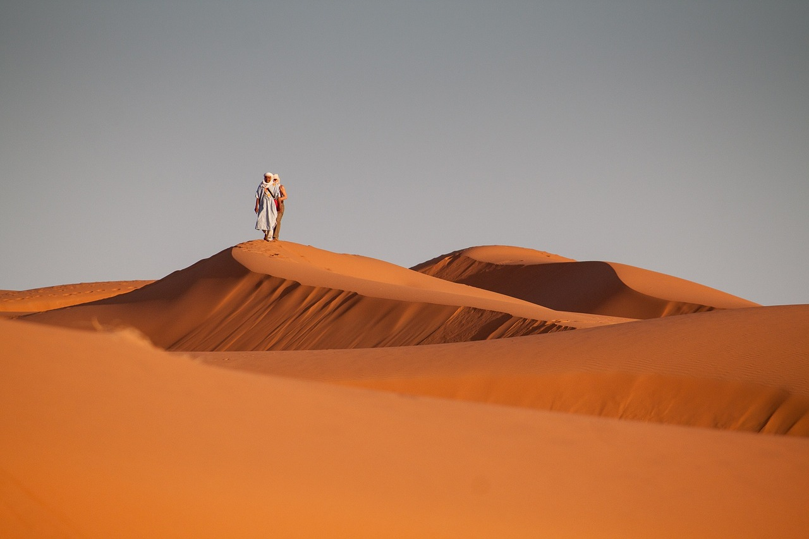
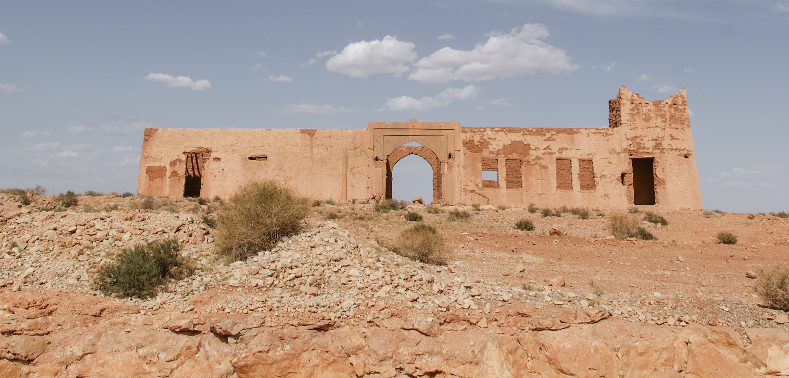

På vores familierejser er det kun jeres familie, der rejser sammen. Med på rejsen har I jeres egen lokale, engelsktalende rejseleder, der står for det praktiske men som også sikrer, at rejsen bliver en oplevelse både for børnene og de voksne.
I har flere dage uden guide, hvor I kan nyde swimmingpool eller slappe af i jeres eget tempo.
VIETNAM

Familierejsen til Vietnam er blandt vores mest populære rejser for familier med børn. Rejsen indeholder mange højdepunkter, bl.a. besøg hos en vietnamesisk familie i charmerende Hanoi. Her mærker I den vietnamesiske gæstfrihed og ser, hvordan en almindelig familie lever. Glæd jer ligeledes til den smukke sejltur i Ha Long-bugten, hvor I overnatter på skibet og kan nyde den stille aften og morgen i bugten, omgivet af de vidunder- lige kalkstensbjerge.

Vi begynder i Hanoi, hvor børnene kan arbejde med kunst og keramik, og I skal på etnologisk museum, der vil give jer en større forståelse for regionens etni- ske befolkning. Inden I fortsætter mod det centrale Vietnam besøger I den fortryllende Ha Long-bugt, der er på UNESCOs liste over verdensarv. Ombord på skibet er der tid til at fortæller historier og hygge sig med børnene. I hører om dyrelivet og besøger et lille skersamfund, så I får en fornemmelse af, hvordan en familie bor i Vietnam. I Hoi An kommer I til at eksperimentere med kogekunst og tager på cykelture i de grønne, omkringliggende landskaber. I Hoi An er der mulighed for at slappe af og nyde strandlivet, inden rejsen slutter i det sydlige Vietnam.

SRI LANKA
Familierejsen til Sri Lanka er tilrettelagt med tre opholdssteder. På dags- ture oplever I tidligere kongebyer, hvor man fornemmer landets historiske dybde, kommer til Anuradhapura med det gamle Bo-træ og til Sigiriya, hvor Kong Kasyapa byggede sin særprægede løveborg på en klippetop. I bor bl.a. i det smukke Kandy, den gamle kongeby med Tandens Tempel. I besøger kokosplantager og hører om teproduktion, og så skal I naturligvis opleve det rige dyreliv i de frodige nationalparker. Rejsen slutter ved stranden b.a. med besøg på et skildpadde-center og med mulighed for en sejltur, hvor I kan observere blåhvaler.


Rundrejsen er tilrettelagt med tre opholdssteder. På dagsture oplever I tidligere kongebyer, hvor man fornemmer landets historiske dybde, kommer til Sigiriya, hvor Kong Kasyapa byggede sin særprægede løveborg på en klippetop. I bor bl.a. i det smukke Kandy, den gamle kongeby med Tandens Tempel. I besøger kokosplantager og hører om teproduktion, I besøger en camp for elefantunger, der er kommet til skade i naturen og som genoptrænes for at de igen kan klare sig. Rejsen slutter ved stranden, hvor I kan observere blåhvaler.
JORDAN
På vores familierejse i Jordan bevæger I jer gennem den smukke ørken med de enorme hvide sandyner så langt øjet rækker - lige indtil I når jeres ørkencamp. Her skal I spise aftensmad under den mørke, stjerneklare himmel, inden I falder til ro efter en lang og spændende dag. Vi har indlagt dage ved Aqa- ba-bugten, hvor I kan nyde stranden og høre historien om Aladdin, der netop kom fra disse kanter. Og så besøger I det smukke Petra. Turens mange højdepunkter rundes af med et par dage på et skønt hotel direkte ned til Det døde Hav.

Vi begynder rejsen i det nordlige Jordan, hvor vi blandt andet besøger de romerske ruiner i Jerash - en af de mest velbevarede romerske provinsbyer i verden. Her hører vi om de gamle romere og vi sørger for, at også børnene synes det er sjovt. En af turens store højdepunkter er Petra, der langsomt kommer til syne når vi kommer gennem den smalle slugt og ser den imponerende ruin, der går tilbage til nabatæernes tid. Nogle vil måske huske den smukke portal fra slutscenen i Indiana Jones? Om alle omstændigheder træder I ind i et sandt eventyrunivers. Her kan både børn og voksne være med.
På rejsen bevæger vi os gennem den smukke ørken med de enorme hvide sandyner så langt øjet rækker - lige indtil vi når vores ørkencamp. Her skal I spise aftensmad under den mørke, stjerneklare himmel in- den vi falder til ro efter en lang og spændende dag. Vi har indlagt dage ved Aqaba-bugten, hvor I kan nyde stranden og høre historien om Aladdin, der netop kom fra disse kanter. Turens mange højdepunkter rundes af med et par dage på skønt hotel direkte til Det døde Hav.
MAROKKO
Vi har sammensat en meget alsidig familierejse til Marokko, der kombi- nerer det farvestrålende Marrakech med ophold i den smukke Sahara-ørken. I ørkenen overnatter I på et lille ørkenhotel med udsigt over det smukke ørkenlandskab. Der er mulighed for at forlænge rejsen med ophold i Agadir, hvor I kan nyde stranden og det varme klima.


Vi har sammensat en meget alsidig Marokko-rejse, der kombinerer det farvestrålende Marrakech med ophold i den smukke Sahara-ørken. I ørkenen overnat- ter I under den stjerneklare himmel på et lille ørk- enhotel med udsigt over det smukke ørkenlandskab. Der er mulighed for at forlænge rejsen med ophold i Agadir, hvor I kan nyde stranden og det varme klima. På hele rejsen har I vores lokale, engelsktalende familieguide, der sikre at alt det praktiske fungerer så hele familien kan nyde at være sammen om de mange spændende oplevelser, der venter jer.
De este dage er der program på hele dagen eller dele af dagen, men I bestemmer selv tempoet og I kan undervejs på rejsen tilrettelægge, hvordan dagens skal stykkes sammen. Det er den eksibilitet som de este familier søger og som I sidste ende gør rejsen til en god familieoplevelse.
